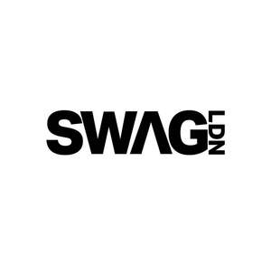

Trade Mark Journal No.2026/003 16 January 2026
UK00004315817 25 December 2025 (18,25,35)

- Class 18
- Bags for clothes.
- Class 25
- Clothing; Swaddling clothes; Baby clothes; Nappy pants [clothing]; Denims [clothing]; Work clothes; Jackets [clothing]; Shorts [clothing]; Clothes for sports; Drawers [clothing]; Drawers as clothing; Jackets (Stuff -) [clothing]; Stuff jackets [clothing]; Clothes for sport; Linen clothing; Headbands [clothing]; Headbands for clothing; Kerchiefs [clothing]; Bottoms [clothing]; Gloves [clothing]; Gloves as clothing; Furs [clothing]; Capes (clothing); Trunks being clothing; Maternity clothing; Babies' pants [clothing]; Jerseys [clothing]; Clothing for leisure wear; Layettes [clothing]; Clothing layettes; Hoods [clothing]; Woolen clothing; Oilskins [clothing]; Ready-to-wear clothing; Gabardines [clothing]; Clothing for babies; Garments for protecting clothing; Bodies [clothing]; Tops [clothing]; Gussets for underwear [parts of clothing]; Belts [clothing]; Belts for clothing; Playsuits [clothing]; Collars [clothing]; Pockets for clothing; Veils [clothing]; Knitwear [clothing]; Paper hats for use as clothing items; Corsets [clothing, foundation garments]; Silk clothing; Mitts [clothing]; Fabric belts [clothing]; Hats (Paper -) [clothing]; Paper hats [clothing]; Belts (Money -) [clothing]; Beach clothing; Braces for clothing; Chaps (clothing); Casual clothing; Embroidered clothing; Visors [clothing]; Knitted clothing; Hats; Beanie hats; Toques [hats]; Bobble hats; Fascinator hats; Cloche hats; Mitres [hats]; Fur hats; Woolly hats; Baseball hats; Fashion hats; Miters [hats]; Bucket hats; Baseball caps and hats; Sports caps and hats; Rain hats; Sun hats; Party hats [clothing]; Top hats; Ski hats; Beach hats; Chefs' hats; Ushankas [fur hats]; Small hats; Fake fur hats; Bonnets [headwear]; Beanies; Paper hats for wear by nurses; Paper hats for wear by chefs; Fedoras; Clothing for horse-riding [other than riding hats]; Caps [headwear]; Caps being headwear; Scarves; Sedge hats (suge-gasa); Scarfs; Frames (Hat -) [skeletons]; Hat frames [skeletons]; Visors [headwear]; Visors being headwear; Bandanas [neckerchiefs]; Snoods [scarves]; Visors [hatmaking]; Headgear for wear; Boas [clothing]; Bandannas; Bandanas; Bonnets; Cowls [clothing]; Head scarves; Headwear; Shawls and headscarves; Headbands; Waistcoats [vests]; Knitted caps; Caps with visors; Berets; Fur coats and jackets; Headdresses [veils]; Sweaters; Knitted gloves; Gloves for apparel; Headgear; Fingerless gloves as clothing; Knit jackets; Sun visors [headwear]; Fur jackets; Shirts; Muffs [clothing]; Kerchiefs; Knit shirts; Cashmere scarves; Golf clothing, other than gloves; Shawls; Fezzes; Jumpers [sweaters]; Wristbands [clothing]; Collars for dresses; Socks; Socks and stockings; Slipper socks; Anklets [socks]; Toe socks; Woollen socks; Ankle socks; Footless socks; Trouser socks; Sweat-absorbent socks; Non-slip socks; Thermal socks; Men's socks; Tennis socks; Socks for men; Sports socks; Water socks; Pop socks; Inner socks for footwear; Sock suspenders; Men's dress socks; Knitted underwear; American football socks; Japanese style socks (tabi); Insoles for shoes and boots; Insoles [for shoes and boots]; Knitted baby shoes; Bootees (woollen baby shoes); Knee-high stockings; Slippers; Japanese style socks (tabi covers); Shoes; Valenki [felted boots]; Socks for infants and toddlers; Esparto shoes or sandles; Leggings [trousers]; Woollen tights; Tongues for shoes and boots; Stockings (Sweat-absorbent -); Sweat-absorbent stockings; Stockings [sweat-absorbent]; Pants; Underwear; Legwarmers; Boy shorts [underwear]; Pullstraps for shoes and boots; Mittens; Fleece shorts; Stockings; Booties; Shoes for leisurewear; Hosiery; Slip-on shoes; Trousers shorts; Stockings (Heel pieces for -); Heel pieces for stockings; Esparto shoes or sandals; Pedicure slippers; Tights; Lace boots; Waterproof shoes; Underpants; Sandals and beach shoes; Foam pedicure slippers; Insoles for footwear; Rubber shoes; Anti-sweat underwear; Underwear (Anti-sweat -); Sneakers [footwear]; Shoe soles; Heel protectors for shoes; Soles for footwear; Slipper soles; Footwear soles; Shoes for foot volleyball; Foot volleyball shoes; Wooden shoes [footwear]; Sweat-absorbent underclothing [underwear]; Ankle boots; Snow pants; Sneakers; Russian felted boots (Valenki); Heel pieces for shoes; Sweat-absorbent underwear; Jockstraps [underwear]; Moisture-wicking sports pants; Leather slippers; Sandals; Mountaineering shoes; High-heeled shoes; Soccer shoes; Flip-flops for use as footwear; Capri pants; Boots; Hidden heel shoes; Knee warmers [clothing]; Corduroy pants; Knitted tops; Footless tights; Thong sandals; Clothes; Gussets for bathing suits [parts of clothing]; Ready-made clothing.
- Class 35
- Retail services connected with the sale of clothing and clothing accessories.
Swag London limited